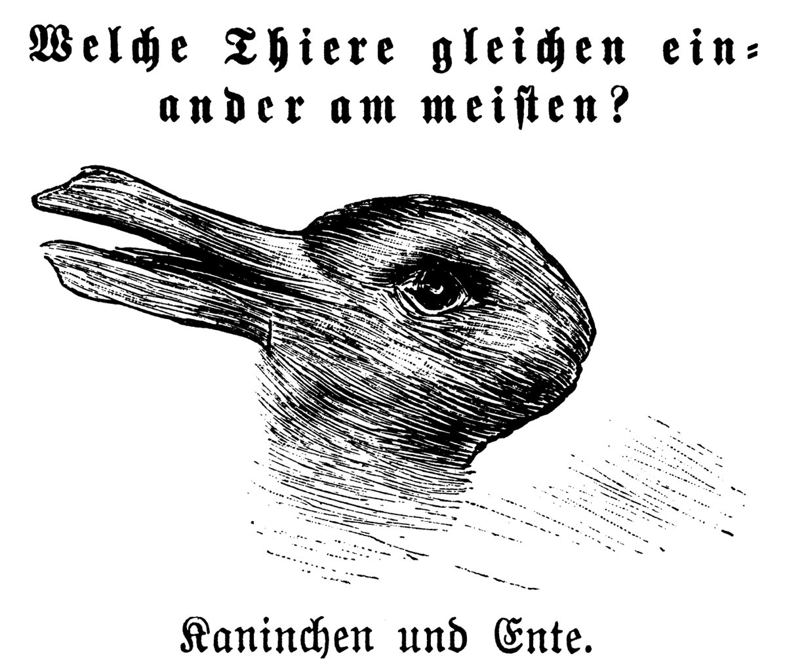
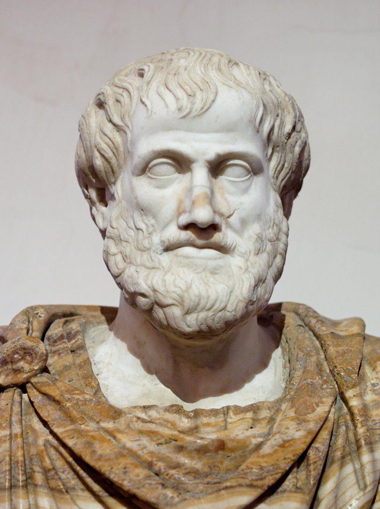
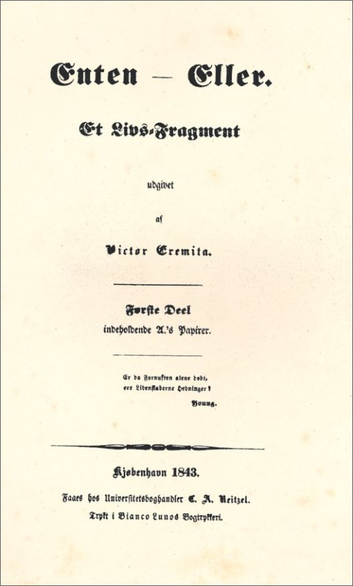
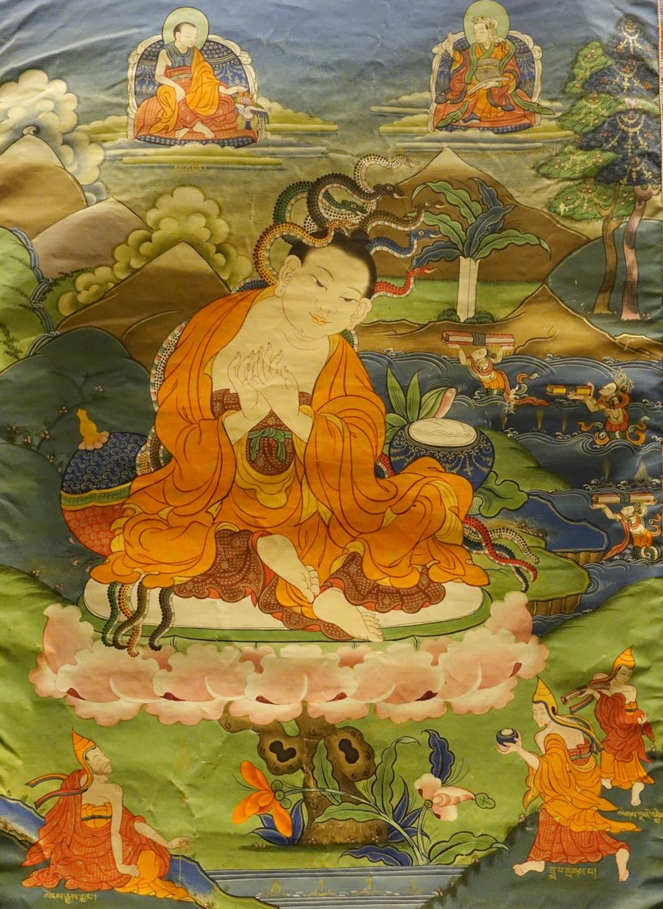
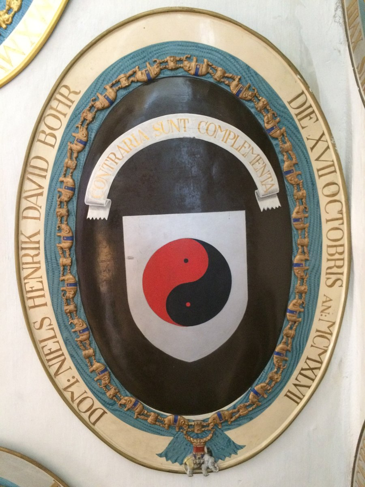

序一枚の絵は、同時に二つにはならない
1892年10月、ミュンヘンの絵入り雑誌『フリーゲンデ・ブレッター』に小さな戯画が載った。添えられた問いは「どの動物とどの動物がいちばん似ているか」。答えは「ウサギとアヒル」である。左に突き出した二本の突起は、アヒルのくちばしにも、ウサギの耳にも見える。その数年後、アメリカの心理学者ジョゼフ・ジャストローがこの図を論文に引き、さらに半世紀ののち、ウィトゲンシュタインが『哲学探究』で「として見る」ことの例に使ったことで、この落書きのような絵は哲学の古典になった。

この絵の不思議は、二つの見え方が両方とも紙の上にあるのに、同時には見えないことにある。アヒルを見ているあいだ、ウサギはどこかへ退いている。ウサギに切り替えた瞬間、アヒルが消える。線は一本も変わっていない。変わったのは、見る側が「これはどちらか」と決めたことだけである。
第1回の講義の二重スリットにも、これとよく似た場面があった。電子がどちらの穴を通ったかを光で見分けると、検出面の縞が消える。見分けるのをやめると、縞が戻る。もちろん、だまし絵の切り替えは心の働きであり、電子の縞が消えるのは光子が電子を蹴るという物理の出来事であって、両者は同じものではない。だが「どちらかに決めようとすると、もう一方の姿が退く」という型は共通している。このコラムは、その「どちらか」という言葉、つまり「か」の一文字を追いかける。
一「か」は、西洋の論理の背骨である
「AかAでないか、そのどちらかだ」。あまりに当たり前に聞こえるこの原則を、はっきり言葉にしたのはアリストテレスである。『形而上学』第四巻で、彼は「矛盾するものどうしのあいだに、中間のものはありえない。一つの主語について、どんな述語も肯定するか否定するかのどちらかでなければならない」と書いた（筆者訳）。後世これを排中律と呼ぶ。真ん中は排除される。灰色はない。


この原則は、講義の (a) ボールの議論でそのまま働いている。ボールは穴1を通ったか、通らなかったか。通らなかったなら穴2を通った。中間はない。だから穴1経由の数と穴2経由の数を足せば全部になり、P₁₂ = P₁ + P₂ が出る。確率の足し算とは、排中律を数で書いたものだと言ってよい。「か」が成り立つ世界では、確率は足し算になる。足し算が成り立たないなら、どこかで「か」が破れている。
「か」は論理学の教科書の中だけの話ではない。1843年、デンマークの思想家キルケゴールは、二巻の大著に『あれか、これか』という題をつけた。人生を美的に生きるか、倫理的に生きるか。両方を少しずつ、という逃げ道を、この題は最初から塞いでいる。キルケゴールにとって「か」は、人間を決断の前に立たせる刃であった。選ばないことも、一つの選択として数えられてしまう。
ここで一度、転回しておく。排中律は、世界がどうなっているかを述べた法則なのか。それとも、言葉で世界を語るときの文法なのか。アリストテレス自身は、これを「存在」についての最も確かな原理として掲げた。だが、文法が世界の側の性質だという保証は、どこにもない。電子は、この問いを実験室に持ち込んだ。
皮肉なことに、講義が「穴1か穴2のどちらかを通った」を退けるときに使った武器は、背理法であった。仮定を置き、そこから実験と食い違う帰結を導き、ゆえに仮定は偽である、と結ぶ。この「ゆえに偽」の一歩は、「仮定は真か偽かのどちらかだ」という排中律に支えられている。つまり講義は、「か」の論理を使って、電子についての「か」を打ち倒したことになる。これは自己矛盾ではない。退けられたのは「電子の通り道について、穴1か穴2かという二択が立つ」という物理的な主張であり、命題が真か偽かという論理の道具のほうは、最後まで無傷で働いている。「か」には少なくとも二つの層がある。言葉を運ぶ層と、世界を切り分ける層である。電子が破ったのは後者だけだった。
二龍樹は、四つとも否定した
アリストテレスから五百年ほどのち、南インドに龍樹（ナーガールジュナ、2〜3世紀頃）という仏教の論師が現れる。彼の主著『中論』は、ある独特の論法で埋め尽くされている。物事について言えることを、四つに分けて並べるのである。
「Aである」「Aでない」「Aであり、かつAでない」「Aでもなく、Aでないのでもない」四句分別（テトラレンマ）の型
アリストテレスの論理は、このうち最初の二つしか認めない。三つ目は矛盾律に、四つ目は排中律に反するからである。ところがインドの論争の伝統は、四つすべてを、検討すべき候補として机に並べた。そして龍樹は多くの場面で、四つともを否定する。鳩摩羅什の漢訳では、『中論』観因縁品の偈が、物がどう生じるかについて「諸法は自ら生ぜず、亦た他より生ぜず、共ならず、無因ならず」と、四つの可能性を一つずつ退けている。

この型を、二重スリットの電子に当ててみる。問いは「電子はどの穴を通ったか」である。
四つとも退けられる。ここで二つの限定を入れておく。第一に、龍樹が問題にしたのは物理ではなく、あらゆるものには固定した本性（自性）がない、という空の思想であり、彼が電子を予見していたわけではない。第二に、物理学者は四句を否定したまま黙りはしない。言葉の四つの箱がすべて外れたとき、物理学は箱の外に、計算の規則を一つ置いた。それが確率振幅である。
それでも、型の一致には目を留めてよい。二つの選択肢を前にして「どちらか」と問うのは、問いがすでに答えの形を決めてしまっているということである。龍樹の否定は、答えを拒むためというより、問いの形そのものを点検するための手続きであった。京都学派の哲学者・山内得立は1974年の『ロゴスとレンマ』で、西洋の論理（ロゴス）が排中律の上に立つのに対し、東洋の思考はこの四句のような「レンマ」の論理を育てたと論じている。二重スリットは、ロゴスの国の実験室に、レンマの問いを持ち込んだと言えなくもない。
三ボーアは、反対を盾に描いた
二重スリットの謎を前にして、量子力学の建設者たちのなかで最も長く「か」と格闘したのは、デンマークのニールス・ボーアであろう。1927年9月、イタリアのコモで開かれたヴォルタ記念の学会で、ボーアは相補性という考えを初めて公に語った。電子や光は、ある実験では粒として、別の実験では波として現れる。二つの描像は互いに排除し合い、同時には使えない。しかし両方を合わせなければ、対象の全体は語れない。
これは排中律の「か」とは違う。「粒か波か、どちらかが正しい」とは言わない。かといって、龍樹のように四つを退けて沈黙するのでもない。「粒の言葉と波の言葉は、同じ一枚の紙に同時には書けないが、どちらも要る」。ウサギとアヒルの絵を思い出せば、近い。二つの見え方は同時に成り立たないが、どちらかが錯覚だというわけでもない。
この考えにいちばん執拗に挑んだのはアインシュタインである。ボーアが1949年に書いた回想「アインシュタインとの議論」によれば、二人は二重スリットそのものを論争の舞台にした。アインシュタインの案はこうである。二重スリットの手前に置く、穴が一つだけの板を固定せず、ばねで吊って動けるようにしておく。電子がそこから穴1の方へ曲がれば板は一方へ、穴2の方へ曲がれば別の方へ、わずかに反動で押される。その反動を測れば、縞を乱さずに通り道が分かるのではないか。ボーアの答えは、板そのものも量子力学に従う、というものであった。反動を見分けられるほど板の運動量を正確に知ろうとすれば、不確定性関係によって板の位置がぼやけ、そのぼやけがちょうど縞を塗りつぶすのに足りる。通り道を知る手段を工夫するたびに、別の場所から「か」の代価が取り立てられる。ボーアはこの論争を通じて、相補性を思想ではなく、装置の勘定として示そうとした。

1947年、ボーアはデンマーク最高位のエレファント勲章を授けられた。王族や国家元首でない人物への授与は異例で、受勲者は紋章を作ることになっている。ボーアが盾の中央に選んだのは、赤と黒の太極図であった。添えた銘はラテン語で「Contraria sunt complementa」、すなわち「対立するものは相補う」。ボーアは十年前の1937年に日本と中国を訪れており、中国の陰陽の思想に強い印象を受けていたと伝えられる（太極図を勧めたのは中国思想に通じた知人だったとする記録もある）。
太極図をよく見ると、黒の中に赤い点があり、赤の中に黒い点がある。陰の極みに陽が芽生え、陽の極みに陰が宿る。白黒をはっきり分けた図でありながら、どちらも純粋ではない。排中律の図解を描こうとすれば、円を一本の直線で二つに割ればすむ。太極図はその直線を、わざわざS字に曲げ、さらに互いの中に相手の種を置いた。もちろん、陰陽思想は物理の理論ではなく、ボーアの相補性も陰陽の焼き直しではない。だが二十世紀の物理学者が自分の盾に、直線ではなくS字を選んだことは、「か」の時代の終わりを告げる一つの身振りとして読める。
四「か」を、「と」に書きかえる
では、物理学は「か」の代わりに何を置いたのか。答えは講義の式の中にある。
φ を使って P₁₂ = |φ₁ + φ₂|² と書いた（第1回 §4.4、式 (4.2)）。足しているのは確率ではなく振幅であり、2乗するのは足したあとである。展開すると |φ₁|² + |φ₂|² に干渉項 2√(P₁P₂) cos δ が加わる。この最後の項が、「穴1か穴2か」の足し算には存在しない部分である。→ 第1回 二重スリットと光の粒ここで起きていることを言葉にすれば、こうなる。確率の世界では、「穴1を通ったか、穴2を通ったか」という選言（または）が、足し算 P₁ + P₂ に対応していた。振幅の世界では、それが「穴1を通る状態と、穴2を通る状態の、重ね合わせ」に置きかわる。φ₁+φ₂ の「＋」は、「または」ではなく「と」なのである。二つの可能性が、どちらかに決まる前の段階で、互いに打ち消したり強め合ったりする余地を残したまま、一つの数の中に同居している。
ファインマンは講義録の第三巻を、まさにこの実験から始め、それを「古典的な仕方では絶対に説明できない現象」であり、「量子力学の唯一の謎を含んでいる」と書いた（筆者訳）。謎は消えていない。ただ、謎の在りかは移った。電子が「本当は」どちらを通ったのか、という問いの代わりに、なぜ自然は「か」ではなく「と」で計算されるのか、という問いが立つ。そして、見分けようとした瞬間に「と」が「か」に戻り、干渉項が平均して消える。序のだまし絵で言えば、ウサギでもアヒルでもある線画が、見る者が決めた瞬間に、どちらか一方になる。
ただし、ここで「と」を「半分ずつ」と読み違えてはいけない。あの線画は、上半分がウサギで下半分がアヒル、という合成ではない。一本一本の線が、まるごとウサギの線であり、まるごとアヒルの線である。電子も同じで、穴1に半分、穴2に半分と割れて進むのではない。検出器はいつも、電子を丸ごと1個数える。「と」は量を分け合う言葉ではなく、可能性を重ねて持つ言葉である。
しかも量子力学の「と」は、ただ二つを並べるだけの曖昧な接続ではない。φ₁ と φ₂ はそれぞれ複素数で、大きさのほかに位相という角度を持っている。二つを足すとき、その角度の差 δ によって、強め合うか、打ち消し合うか、そのあいだのどこかになるかが、きっちり決まる。講義の例題では、片方ずつなら100個ずつ届く場所に、両方を開けると400個届く所と、1個も届かない所ができた。日常の「と」には、この角度がない。「AとB」と言えば、AもBも同じ重さで並ぶだけである。量子力学は、「と」に角度をつけて数える方法を発明した、と言ってもよい。曖昧さに見えたものは、実は精密さの別の形だった。教材の注意書きが「電子が二つに割れるのではない」とわざわざ念を押しているのは、日本語の「と」が「分け合う」とも「重ねる」とも読めてしまうからでもある。
日本語の「と」には、もう一つ面白い性質がある。「AとB」は二つを並べるだけで、AとBのどちらが先かも、どちらが主かも決めない。英語の and のように論理記号として固まりきってもいない。「あれか、これか」の刃の鋭さに比べると、「あれと、これと」はいかにも締まりがない。だが量子力学が最初に教えるのは、自然がこの締まりのない「と」の形で振る舞い、こちらが鋭い「か」を突きつけたときにだけ、一つの答えを返すということである。
結問いの形が、答えの形を決める
アリストテレスは「か」を存在の原理とし、キルケゴールは「か」を生き方の刃とした。龍樹は四つの「か」をすべて退けて、問いの形そのものを疑った。ボーアは盾の上で直線をS字に曲げた。そして講義の黒板では、確率の足し算が振幅の足し算に書きかえられた。二千年あまりのあいだに起きたのは、「か」が誤りだと分かったことではない。「か」が問う側の道具であって、世界の側の性質とは限らない、と分かったことである。
第1回の後半、講義は話を光に移し、波だと思っていた光が粒（光子）として来ることを見た。電子は粒なのに波のように縞をつくり、光は波なのに粒として電子を叩き出す。ここでも「粒か波か」と問えば、答えは割れる。次の第2回では、レジュメの「量子力学の基本命題」の三つ目として、この「と」が重ね合わせの原理 ψ = αψ₁ + βψ₂ という形で、正式に法則の座に就く。
「か」と問うたびに、
「と」は姿を隠す。
本棚このコラムの書架
参照した本 ── 本文が依拠した原典
- アリストテレス『形而上学』第四巻（Γ）第7章 前4世紀排中律の定式化。英訳（W. D. Ross 訳）のオンライン版で該当箇所を確認した。
- 龍樹『中論』観因縁品（鳩摩羅什 漢訳） 2〜3世紀成立、漢訳5世紀初頭「諸法不自生 亦不従他生 不共不無因」の偈。ウィキソース等の漢訳本文で確認した。
- R. P. ファインマン他『ファインマン物理学 量子力学』第1章 原著1965年二重スリットを「唯一の謎」と呼んだ箇所。講義のレジュメの参考文献でもある。原文はカリフォルニア工科大学の公開版で読める。
- N. ボーア「原子物理学における認識論上の問題をめぐるアインシュタインとの議論」 1949年反動するスリットをめぐる論争。第三章で使った。
※原典はいずれも通読したものではなく、オンライン資料で該当箇所を確認した。
参考図書 ── さらに読むために
- 山内得立『ロゴスとレンマ』 岩波書店、1974年排中律の論理（ロゴス）と、四句分別の論理（レンマ）を正面から対比した本。第二章の背景にある。
- S. キルケゴール『あれか、これか』 原著1843年。邦訳は複数「か」を生き方の問題として突きつけた書。題名だけでも、このコラムの半分を語っている。
- L. ウィトゲンシュタイン『哲学探究』 原著1953年。邦訳は複数ウサギとアヒルの図を使って「として見る」ことを論じた箇所（第二部）がある。
- 外村彰『量子力学を見る ― 電子線ホログラフィーの挑戦』 岩波書店（岩波科学ライブラリー）、1995年電子を1個ずつ打って干渉縞を浮かびあがらせた実験の当事者による解説。教材の写真の実験である。
図版の出典
- 扉：File:Taipeh Ciyou Temple Hinterer Tempel 14.jpg（Zairon、CC BY-SA 4.0。太極図の周辺を切り抜いて縮小）
- ウサギとアヒル：File:Kaninchen und Ente.png（Public domain。縮小のみ）
- アリストテレス像：File:Aristotle Altemps Inv8575.jpg（Public domain。縮小のみ）
- 『あれか、これか』初版扉：File:Kierkegaard Enten-Eller.jpg（Public domain）
- 龍樹のタンカ：File:Nagarjuna, Tibet, 1644-1911 AD - Sichuan Provincial Museum（Daderot、Public domain。縮小のみ）
- ボーアの紋章：File:Niels David Henrik Bohr - Coat of arms in Frederiksborg Castle Church.jpg（Kim Bach、CC BY-SA 4.0。縮小のみ）


事実確認に用いた資料
- Niels Bohr（英語版ウィキペディア）：1947年のエレファント勲章、紋章の太極図と銘、1927年コモでの相補性の発表
- Process and Impact of Niels Bohr's Visit to Japan and China in 1937（Endeavour誌の論文要旨）：1937年の日本・中国訪問
- 岩波書店『ロゴスとレンマ』書誌ページ：山内得立の著書の書誌
- 中論 観因縁品（維基文庫）：鳩摩羅什訳の偈
- N. Bohr, "Discussions with Einstein on Epistemological Problems in Atomic Physics"（1949）：反動するスリットの思考実験とボーアの応答
- The Feynman Lectures on Physics, Vol. III, Ch. 1：「the only mystery」の原文
- ウサギとアヒル図の初出（1892年10月23日『フリーゲンデ・ブレッター』）とジャストロー（1899年）、ウィトゲンシュタインによる引用：Wikimedia Commons の各ファイル説明、および英語版ウィキペディア「Rabbit–duck illusion」